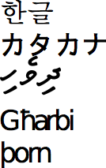

Recherche d’information : l’indexation¶
Dans ce chapitre, nous allons continuer notre découverte des fondements théoriques de la recherche d’information, avec l’indexation. Il s’agit d’une étape que vous avez réalisée à la fin du chapitre précédent, plus ou moins sans le savoir (puisqu’elle était automatisée), lorsque que vous avez importé des documents dans ElasticSearch. C’est dans cette étape que se décide et s’affine la transformation du texte des documents, en vue de remplir les index inversés vus au chapitre précédent. L’indexation permet d’améliorer les performances du moteur de recherche et la satisfaction des besoins des utilisateurs.
Nous allons aborder cette étape d’un point de vue théorique mais aussi d’un point de vue pratique, toujours avec Elasticsearch.
S1: L’analyse de documents¶
Supports complémentaires:
En présence d’un document textuel un tant soit peu complexe, on ne peut pas se contenter de découper plus ou moins arbitrairement en mots sans se poser quelques questions et appliquer un pré-traitement du texte. Les effets de ce pré-traitement doivent être compris et maîtrisés: ils influent directement sur la précision et le rappel. Quelques exemples simples pour s’en convaincre:
si on cherche les documents contenant le mot « loup », on s’attend généralement à trouver ceux contenant « loups », « Loup », « louve »; il faut donc, quand on conserve un document dans Elasticsearch, qu’il soit en mesure de mettre ces différentes formes dans le même index inversé;
si on ne normalise pas (on conserve les majuscules et les pluriels), on va dégrader le rappel, puisqu’un utilisateur saisissant le mot-clef « loup » ne trouvera pas les documents dans lesquels ce terme apparaît seulement sous la forme « Loup » ou « loups »;
on le comprend immédiatement avec le cas de « loup / louve », il faut une connaissance experte de la langue pour décider que « louve » et « loup » doivent être associés, ce qui requiert une transformation qui dépend de la langue et nécessite une analyse approfondie du contenu;
inversement, si on normalise (retrait des accents, par exemple) « cote », « côte », « côté », on va unifier des mots dont le sens est différent, et on va diminuer la précision.
En fonction des caractéristiques des documents traités, des utilisateurs de notre système de recherche, il faudra trouver un bon équilibre, aucune solution n’étant parfaite. C’est de l’art et du réglage…
L’analyse se compose de plusieurs phases:
Tokenization: découpage du texte en « termes ».
Normalisation: identification de toutes les variantes d’écritures d’un même terme et choix d’une règle de normalisation (que faire des majuscules? acronymes? apostrophes? accents?).
Stemming (« racinisation »): rendre la racine des mots pour éviter le biais des variations autour d’un même sens (auditer, auditeur, audition, etc.)
Stop words (« mots vides »), comment éliminer les mots très courants qui ne rendent pas compte de la signification propre du document?
Ce qui suit est une brève introduction, essentiellement destinée à comprendre les outils prêts à l’emploi que nous utiliserons ensuite. Remarquons en particulier que les étapes ci-dessus sont parfois décomposées en sous-étapes plus fines avec des algorithmes spécifiques (par exemple, un pour les accents, un autre pour les majuscules). L’ordre que nous donnons ci-dessus est un exemple, il peut y avoir de légères variations. Enfin, notez bien que le texte transformé dans une étape sert de texte d’entrée à la transformation suivante (nous y reviendrons dans la partie pratique).
Tokenisation et normalisation¶
Un tokenizer prend en entrée un texte (une chaîne de caractères) et produit une séquence de tokens. Il effectue donc un traitement purement lexical, consistant typiquement à éliminer les espaces blancs, la ponctuation, les liaisons, etc., et à identifier les « mots ». Des transformations peuvent également intervenir (suppression des accents par exemple, ou normalisation des acronymes - U.S.A. devient USA).
La tokenization est très fortement dépendante de la langue. La première chose à faire est d’identifier cette dernière. En première approche on peut examiner le jeu de caractères (Fig. 39).

Fig. 39 Quelques jeux de caractères … exotiques¶
Il s’agit respectivement du: Coréen, Japonais, Maldives, Malte, Islandais. Ce n’est évidemment pas suffisant pour distinguer des langues utilisant le même jeu de caractères. Une extension simple est d’identifier les séquences de caractères fréquents, (n-grams). Des bibliothèques fonctionnelles font ça très bien (e.g., Tika, http://tika.apache.org)
Une fois la langue identifiée, on divise le texte en tokens (« mots »). Ce n’est pas du tout aussi facile qu’on le dirait!
Dans certaines langues (Chinois, Japonais), les mots ne sont pas séparés par des espaces.
Certaines langues s’écrivent de droite à gauche, de haut en bas.
Que faire (et de manière cohérente) des acronymes, élisions, nombres, unités, URL, email, etc.
Que faire des mots composés: les séparer en tokens ou les regrouper en un seul? Par exemple:
Anglais: hostname, host-name et host name, …
Français: Le Mans, aujourd’hui, pomme de terre, …
Allemand: Levensversicherungsgesellschaftsangestellter (employé d’une société d’assurance vie).
Pour les majuscules et la ponctuation, une solution simple est de normaliser systématiquement (minuscules, pas de ponctuation). Ce qui donnerait le résultat suivant pour notre petit jeu de données.
\(d_1\):
le loup est dans la bergerie\(d_2\):
le loup et les trois petits cochons\(d_3\):
les moutons sont dans la bergerie\(d_4\):
spider cochon spider cochon il peut marcher au plafond\(d_5\):
un loup a mangé un mouton les autres loups sont restés dans la bergerie\(d_6\):
il y a trois moutons dans le pré et un mouton dans la gueule du loup\(d_7\):
le cochon est à 12 euros le kilo le mouton à 10 euros kilo\(d_8\):
les trois petits loups et le grand méchant cochon
Stemming (racine), lemmatisation¶
La racinisation consiste à confondre toutes les formes d’un même mot, ou de mots apparentés, en une seule racine. Le stemming morphologique retire les pluriels, marque de genre, conjugaisons, modes, etc. Le stemming lexical fond les termes proches lexicalement: « politique, politicien, police (?) » ou « université, universel, univers (?) ». Ici, le choix influe clairement sur la précision et le rappel (plus d’unification favorise le rappel au détriment de la précision).
La racinisation est très dépendante de la langue et peut nécessiter une analyse linguistique complexe. En anglais, geese est le pluriel de goose, mice de mouse; les formes masculin / féminin en français n’ont parfois rien à voir (« loup / louve ») mais aussi (« cheval / jument »: parle-t-on de la même chose?) Quelques exemples célèbres montrent les difficultés d’interprétation:
« Les poules du couvent couvent »: où est le verbe, où est le substantif?
« La petite brise la glace »: idem.
Voici un résultat possible de la racinisation pour nos documents.
\(d_1\):
le loup etre dans la bergerie\(d_2\):
le loup et les trois petit cochon\(d_3\):
les mouton etre dans la bergerie\(d_4\):
spider cochon spider cochon il pouvoir marcher au plafond\(d_5\):
un loup avoir manger un mouton les autre loup etre rester dans la bergerie\(d_6\):
il y avoir trois mouton dans le pre et un mouton dans la gueule du loup\(d_7\):
le cochon etre a 12 euro le kilo le mouton a 10 euro kilo\(d_8\):
les trois petit loup et le grand mechant cochon
Il existe des procédures spécialisées pour chaque langue. En anglais, l’algorithme Snowball de Martin Porter fait référence et est toujours développé aujourd’hui. Il a connu des déclinaisons dans de nombreuses langues, dont le français, par un travail collaboratif.
Mots vides et autres filtres¶
Un des filtres les plus courants consiste à retire les mots porteurs d’une information faible (« stop words » ou « mots vides ») afin de limiter le stockage.
Les articles: le, le, ce, etc.
Les verbes « fonctionnels »: être, avoir, faire, etc.
Les conjonctions: et, ou, etc.
et ainsi de suite.
Le choix est délicat car, d’une part, ne pas supprimer les mots vides augmente l’espace de stockage nécessaire (et ce d’autant plus que la liste associée à un mot très fréquent est très longue), d’autre part les éliminer peut diminuer la pertinence des recherches (« pomme de terre », « Let it be », « Stade de France »).
Parmi les autres filtres, citons en vrac:
Majuscules / minuscules. On peut tout mettre en minuscules, mais on perd alors la distinction nom propre / nom commu,, par exemple Lyonnaise des Eaux, Société Générale, Windows, etc.
Acronymes. CAT = cat ou Caterpillar Inc.? M.A.A.F ou MAAF ou Mutuelle … ?
Dates, chiffres. Monday 24, August, 1572 – 24/08/1572 – 24 août 1572; 10000 ou 10,000.00 ou 10,000.00
Dans tous les cas, les même règles de transformation s’appliquent aux documents ET à la requête. Voici, au final, pour chaque document la liste des tokens après application de quelques règles simples.
\(d_1\):
loup etre bergerie\(d_2\):
loup trois petit cochon\(d_3\):
mouton etre bergerie\(d_4\):
spider cochon spider cochon pouvoir marcher plafond\(d_5\):
loup avoir manger mouton autre loup etre rester bergerie\(d_6\):
avoir trois mouton pre mouton gueule loup\(d_7\):
cochon etre douze euro kilo mouton dix euro kilo\(d_8\):
trois petit loup grand mechant cochon


{kind=link}
S2: L’indexation dans ElasticSearch¶
Supports complémentaires:
Par défaut, Elasticsearch propose une analyse des documents automatisée,
inférant la nature des champs qui sont présents dans les documents qu’on lui
propose par l’interface _bulk (voir chapitre précédent). Vous pouvez par
exemple consulter l’analyse qui a été réalisée pour les films en saisissant la
commande suivante (dans le terminal ou dans Kopf) :
curl -XGET http://localhost:9200/movies/?pretty=1{ "movies" : { "aliases" : { }, "mappings" : { "movie" : { "properties" : { "fields" : { "properties" : { "actors" : { "type" : "string" }, "directors" : { "type" : "string" }, "genres" : { "type" : "string" }, "image_url" : { "type" : "string" }, "plot" : { "type" : "string" }, "rank" : { "type" : "long" }, "rating" : { "type" : "double" }, "release_date" : { "type" : "date", "format" : "strict_date_optional_time||epoch_millis" }, "running_time_secs" : { "type" : "long" }, "title" : { "type" : "string" }, "year" : { "type" : "long" } } }, "id" : { "type" : "string" }, "type" : { "type" : "string" } } } }, "settings" : { "index" : { "creation_date" : "1510156098539", "number_of_shards" : "1", "number_of_replicas" : "0", "uuid" : "8_C-IZStS5uRhI58Xz9hCA", "version" : { "created" : "2040699" } } }, "warmers" : { } } }
Vous pouvez notamment constater que les champs contenant du texte sont lus comme
des string, ceux contenant des entiers comme des long et la date est lue
comme un type spécifique, date. Avec cette détection, Elasticsearch pourra
opérer des opérations sur les entiers ou les dates (par exemple : les notes
supérieures à 5.8, les films sortis entre le 1er janvier 2006 et le 14 novembre
2008, etc.).
Il est cependant fréquent que l’on souhaite aller plus loin, et affiner la configuration, pour optimiser le moteur de recherche. Il est alors nécessaire de spécifier soi-même un schéma pour les données.
Le schéma¶
Un document est, on l’a vu, constitué de champs (fields), chaque champ étant indexé séparément. Le schéma indique les paramètres d’indexation pour chaque champ. Revenons au document de la section Première indexation, qui décrit un film dans la base Webscope, avec une liaison vers une collection d’artistes :
{ "title": "Vertigo", "year": 1958, "genre": "drama", "summary": "Scottie Ferguson, ancien inspecteur de police, est sujet au vertige depuis qu'il a vu mourir son collègue. Elster, son ami, le charge de surveiller sa femme, Madeleine, ayant des tendances suicidaires. Amoureux de la jeune femme Scottie ne remarque pas le piège qui se trame autour de lui et dont il va être la victime... ", "country": "DE", "director": { "_id": "artist:3", "last_name": "Hitchcock", "first_name": "Alfred", "birth_date": "1899" }, "actors": [ { "_id": "artist:15", "first_name": "James", "last_name": "Stewart", "birth_date": "1908", "role": "John Ferguson" }, { "_id": "artist:282", "first_name": "Arthur", "last_name": "Pierre", "birth_date": null, "role": null } ] }
Reprenant la structure du document ci-dessus, voici un schéma possible :
1{ 2 "mappings": { 3 "movie": { 4 "_all": { "enabled": true }, 5 "properties": { 6 "title": { "type": "string" }, 7 "year": { "type": "date", "format": "yyyy" }, 8 "genre": { "type": "string" }, 9 "summary": { "type": "string"}, 10 "country": {"type": "string"}, 11 "director": { 12 "properties": { 13 "_id": { "type":"string" }, 14 "last_name": { "type":"string"}, 15 "first_name": { "type":"string"}, 16 "birth_date": { "type": "date", "format":"yyyy"} 17 }}, 18 "actors": { 19 "type": "nested", 20 "properties": { 21 "_id": { "type":"string"}, 22 "first_name": { "type":"string"}, 23 "last_name": { "type":"string"}, 24 "birth_date": { "type": "date", "format":"yyyy"}, 25 "role": { "type":"string"} 26 } 27 } 28 } 29 } 30 }
Vous pouvez télécharger ce fichier ici : movie-schema-2.4.json.
Tout est inclus sous le champ « mappings ». Ici, on ne parle que de documents de type movie, d’où la ligne 3. Chaque mapping a deux types de champs :
les méta-champs (meta-fields)
les champs proprement dits.
Méta-champs¶
Le champ _all est un champ méta-champ, dans lequel toutes les valeurs des
autres champs sont par exemple concaténées pour permettre une recherche (mais
elles ne sont pas stockées, pour gagner de la place). Ce champ est déprécié à
partir de la version 6.0 d’Elasticsearch. Le champ _source est un autre
méta-champ, dans lequel le contenu du document est stocké (mais non indexé),
afin d’éviter d’avoir à recourir à une autre base de stockage. C’est évidemment
coûteux en terme de place et pas forcément souhaitable, on peut alors le
désactiver.
Champs¶
Tous les champs sont décrits sous le champ « properties ». ElasticSearch fournit
un ensemble de types pré-définis qui suffisent pour les besoins courants; on
peut associer des attributs à un type. Les attributs indiquent d’éventuels
traitements à appliquer à chaque valeur du type avant son insertion dans
l’index. Par exemple : pour traiter les chaînes de caractères de type
string, il peut être bénéfique de spécifier un analyzer spécifique,
correspondant à un langage particulier. Les attributs possibles correspondent
aux choix présentés dans la première partie de ce chapitre, en terme de
tokenisation, de normalisation, de stop words, etc. La plupart des
attributs ont des valeurs par défaut et sont optionnels. C’est le cas des
suivants, mais nous les avons fait figurer en raison de leur importance :
index indique simplement si le champ peut être utilisé dans une recherche;
store indique que la valeur du champ est stockée dans l’index, et qu’il est donc possible de récupérer cette valeur comme résultat d’une recherche, sans avoir besoin de retourner à la base principale en d’autres termes,
storepermet de traiter l’index aussi comme une base de données;
Les champs index et store sont très importants pour les performances du
moteur. Toutes les combinaisons de valeur sont possibles :
index=true,store=false: on pourra interroger le champ, mais il faudra accéder au document principal dans la base documentaire si on veut sa valeur;
index=true,store=true: on pourra interroger le champ, et accéder à sa valeur dans l’index;
index=false,store=true: on ne peut pas interroger le champ, mais on peut récupérer sa valeur dans l’index;
index=false,store=false: n’a pas de sens à priori; le seul intérêt est d’ignorer le champ s’il est fourni dans le document Elasticsearch.
Remarquez la structure pour le réalisateur (director), correspondant à
l’imbrication d’un objet JSON simple et non d’une valeur atomique. Enfin, notez
l’utilisation du type nested pour les champs ayant plusieurs valeurs, soit,
concrètement, un tableau en JSON; c’est le cas par exemple pour le nom des
acteurs (actors).
Champs créés dynamiquement¶
Pour faciliter les recherches, on peut avoir besoin de regrouper certains champs. Par exemple, dans le cas de documents où le nom et le prénom d’une personne seraient séparés, il serait sans doute pertinent de permettre des recherches sur le nom complet de la personne. Il faudrait alors recopier, à l’indexation, le contenu du champ nom et du champ prenom de chaque document dans un nouveau champ nom_complet. Voici les paramètres associés à cette opération pour un tel schéma.
{ "mappings": { "my_type": { "properties": { "first_name": { "type": "text", "copy_to": "full_name" }, "last_name": { "type": "text", "copy_to": "full_name" }, "full_name": { "type": "text" } } } } }
Importer le schéma dans ElasticSearch¶
On peut stocker le schéma dans un fichier json, par exemple appelé
movie-schema-2.4.json. La création de l’index adoptant ces paramètres dans
ElasticSearch se fait comme ceci (pour l’index monindex) :
curl -XPUT 'localhost:9200/monindex' -H 'Content-Type: application/json' -d movie-schema-2.4.json
Avec ElasticSearch, il est plus difficile de faire évoluer un schéma (qu’avec
une BDD classique). Sauf rares exceptions, il faut en général créer un nouvel
index et réindexer les données. ElasticSearch permet la copie d’un index vers
l’autre avec l’API reindex:
curl -XPOST 'localhost:9200/_reindex?pretty' -H 'Content-Type: application/json' -d' { "source": { "index": "nfe204" }, "dest": { "index": "new_nfe204" } }'
Analyse avec ElasticSearch¶
Pour améliorer le mapping et notre compréhension des résultats, Elasticsearch propose une interface pour observer les effets des paramètres de l’analyse.
Vous pouvez donc voir comment est transformée une chaîne spécifique, par
exemple « X-Men: Days of Future Past », avec l’analyseur par défaut pour l’index
movies :
curl -XGET 'localhost:9200/movies/_analyze?pretty=1' -d '{ "text" : "X-Men: Days of Future Past" }'
# cette requête doit être en POST dans Kopf
Voici le résultat :
{
"tokens" : [ {
"token" : "x",
"start_offset" : 0,
"end_offset" : 1,
"type" : "<ALPHANUM>",
"position" : 0
}, {
"token" : "men",
"start_offset" : 2,
"end_offset" : 5,
"type" : "<ALPHANUM>",
"position" : 1
}, {
"token" : "days",
"start_offset" : 7,
"end_offset" : 11,
"type" : "<ALPHANUM>",
"position" : 2
}, {
"token" : "of",
"start_offset" : 12,
"end_offset" : 14,
"type" : "<ALPHANUM>",
"position" : 3
}, {
"token" : "future",
"start_offset" : 15,
"end_offset" : 21,
"type" : "<ALPHANUM>",
"position" : 4
}, {
"token" : "past",
"start_offset" : 22,
"end_offset" : 26,
"type" : "<ALPHANUM>",
"position" : 5
} ]
}
Le découpage en tokens se fait aux espaces et à la ponctuation, les termes sont normalisés en passant en bas de casse, et le « the » est considéré comme un mot vide. Dans le cas d’un mapping spécifique par champ, il est possible de préciser dans la requête d’analyse le champ sur lequel on souhaite travailler, pour comparer par exemple un découpage dans le champ de titre avec un découpage dans le champ de résumé.
Une chaîne d’analyse personnalisée avec Elasticsearch¶
Comme indiqué dans la première partie, l’analyseur est une chaîne de traitement (pipeline) constituée de tokeniseurs et de filtres. Les analyseurs sont composés d’un tokenizer, et de TokenFilters (0 ou plus). Le tokenizer peut être précédé de CharFilters. Les filtres (TokenFilter) examinent les tokens un par un et décident de les conserver, de les remplacer par un ou plusieurs autres.
Voici un exemple d’analyseur personnalisé.
curl -XPUT 'localhost:9200/indexdetest?pretty' -H 'Content-Type: application/json' -d'
{
"settings": {
"analysis": {
"analyzer": {
"custom_lowercase_stemmed": {
"tokenizer": "standard",
"filter": [
"lowercase",
"custom_english_stemmer"
]
}
},
"filter": {
"custom_english_stemmer": {
"type": "stemmer",
"name": "english"
}
}
}
}
}
'
Le tokenizer est standard, donc le découpage se fait à la ponctuation et aux espaces. On place ensuite deux filtres, un de « lowercase » pour normaliser vers des lettres en bas de casse (minuscules) et un autre appelé « custom_english_stemmer », qui lemmatise le texte avec les règles de la langue anglaise.
On peut ensuite tester l’effet de cet analyseur, comme suit :
curl -XGET 'localhost:9200/indexdetest/_analyze?pretty' -H 'Content-Type: application/json' -d'
{
"analyzer": "custom_lowercase_stemmed",
"text":"Finiras-tu ces analyses demain ?"
}
'
Voici le résultat de l’analyse de cette phrase :
{
"tokens" : [ {
"token" : "finira",
"start_offset" : 0,
"end_offset" : 7,
"type" : "<ALPHANUM>",
"position" : 0
}, {
"token" : "tu",
"start_offset" : 8,
"end_offset" : 10,
"type" : "<ALPHANUM>",
"position" : 1
}, {
"token" : "ce",
"start_offset" : 11,
"end_offset" : 14,
"type" : "<ALPHANUM>",
"position" : 2
}, {
"token" : "analys",
"start_offset" : 15,
"end_offset" : 23,
"type" : "<ALPHANUM>",
"position" : 3
}, {
"token" : "demain",
"start_offset" : 24,
"end_offset" : 30,
"type" : "<ALPHANUM>",
"position" : 4
} ]
}
Et l’on peut comparer ainsi plusieurs analyseurs.
curl -XGET 'localhost:9200/indexdetest/_analyze?pretty' -H 'Content-Type: application/json' -d'
{
"analyzer": "french",
"text":"Finiras-tu ces analyses demain ?"
}
'
{
"tokens" : [ {
"token" : "finira",
"start_offset" : 0,
"end_offset" : 7,
"type" : "<ALPHANUM>",
"position" : 0
}, {
"token" : "analys",
"start_offset" : 15,
"end_offset" : 23,
"type" : "<ALPHANUM>",
"position" : 3
}, {
"token" : "demain",
"start_offset" : 24,
"end_offset" : 30,
"type" : "<ALPHANUM>",
"position" : 4
} ]
}
Ici, le pronom « tu » est éliminé, en raison du réglage par défaut de l’analyseur « French » (pour lequel c’est un stop_word). Avec notre analyseur « custom_lowercase_stemmed », reposant sur la langue anglaise, « tu » n’est pas un stop word, il est préservé. Il en est de même pour le démonstratif ces.
Remarquez que la chaîne analyses est lemmatisée dans les deux cas vers
analys, ce qui permettra à ElasticSearch de regrouper tous les mots de cette
famille (analyse, analyser, analyste).
Conclusion¶
Dans ce chapitre, nous avons vu comme les textes originaux et leurs éventuelles méta-données pouvaient être transformés pour être utilisés par les moteurs de recherche. Cette étape, appelée indexation, comporte de nombreux paramètres et repose sur les travaux académiques en linguistique et recherche d’information, utilisable directement dans des outils comme Elasticsearch. Les paramètres de l’indexation varient suivant les données, même si des options par défaut satisfaisantes existent.
Après avoir indexé convenablement les documents, il nous reste à voir comment y accéder. Nous avons vu dans le chapitre Introduction à la recherche d’information les requêtes Lucene, nous verrons en Travaux Pratiques (chapitre Recherche d’information - TP ElasticSearch) qu’ElasticSearch possède un langage dédié très puissant, permettant des recherches mais aussi des statistiques sur les documents. Dans le chapitre suivant (Recherche avec classement), nous verrons le classement des résultats d’un moteur de recherche.
Exercices¶
Exercice Ex-S2-1: les analyseurs
Tester et interpréter les résultats de l’application des analyseurs suivants.
Analyseur standard anglais:
{ "analyzer": "english", "text": "j'aime les couleurs de l'arbre durant l'été" }Analyseur standard français:
{ "analyzer": "french", "text": "j'aime les couleurs de l'arbre durant l'été" }Analyseur standard neutre, avec quelques filtres:
{ "analyzer": "standard", "filter": [ "lowercase", "asciifolding" ], "text": "j'aime les COULEURS de l'arbre durant l'été" }Ces documents peuvent être soumis à la ressource
_analyzed’un index.curl -XPUT '<url>/monindex/_analyze' -H 'Content-Type: application/json' -d @test.json

Ce cours de Philippe Rigaux est mis à disposition selon les termes de la licence Creative Commons Attribution - Pas d’Utilisation Commerciale - Partage dans les Mêmes Conditions 4.0 International.
Table Of Contents
- Introduction
- Préliminaires: Docker
- Modélisation de bases NoSQL
- Interrogation de bases NoSQL
- MapReduce, premiers pas
- Cassandra - Travaux Pratiques
- MongoDB - Travaux Pratiques
- Introduction à la recherche d’information
- Recherche d’information : l’indexation
- Recherche avec classement
- Recherche d’information - TP ElasticSearch
- Recherche d’information - TP ElasticSearch : pertinence
- Le cloud, une nouvelle machine de calcul
- Systèmes NoSQL: la réplication
- Systèmes NoSQL: le partitionnement
- Calcul distribué: Hadoop et MapReduce
- Traitement de données massives avec Apache Spark
- Traitement de flux massifs avec Apache Flink
- Pig : Travaux pratiques
- Projets NFE204
- Annales des examens
Recherche
Saisissez un ou plusieurs mots-clés.